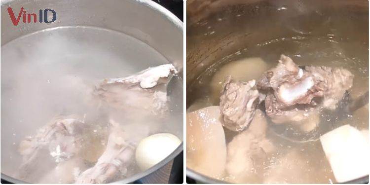
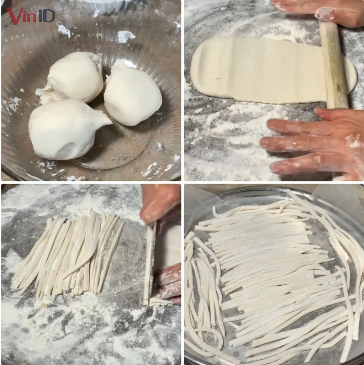
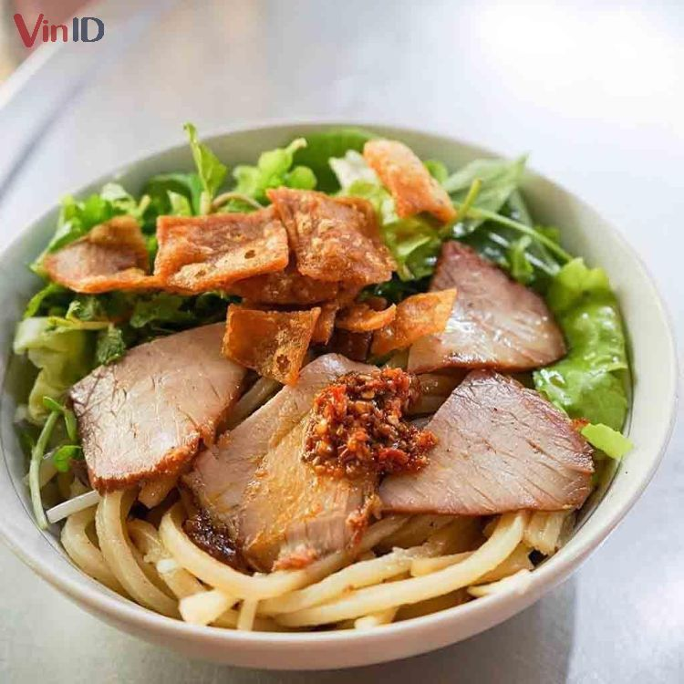

Cao lầu
-
Thành phần
- Bột mỳ đa dụng 200 gram
- Bột gạo xay mịn 200 gram
- Bột năng 140 gram
- Thịt heo 500 gram
- Xương heo 500 gram
- Bột ngũ vị hương 1 muỗng cafe
- Tỏi, hành tây, rau 1 ít
- Gia vị quen thuộc
Hướng dẫn thực hiện
Xương heo rửa qua nhiều lần nước sạch, cho vào rổ, để ráo.
Cho xương vào nồi cùng 3 – 4 chén nước lọc, bật bếp, nấu sôi trên lửa lớn trong
10 phút.
Lưu ý vớt bỏ bọt, nấu đủ thời gian thì gắp xương ra ngoài rửa sạch lại với nước.
Cho xương vào nồi mới cùng 3 lít nước lọc, 1 củ hành tây và 3 muỗng cà phê
muối.
Bật bếp đun sôi rồi hạ nhỏ lửa để hầm xương trong ít nhất 1 tiếng.
Lưu ý không đóng nắp nồi, vớt bỏ bọt trên mặt để nước dùng trong hơn.
- 
Cho 140gr bột mì, 140gr bột gạo và bột năng, 1 muỗng cà phê muối vào tô lớn, trộn
đều với nhau.
Đổ từ từ nước nóng vào tô bột, trộn đều để hỗn hợp kết dính thành khối. Thêm
2 muỗng canh dầu ăn vào, nhào thật đều tay cho tất cả hòa quyện.
Nhào liên tục trong 30 – 40 phút đến khi bột dẻo mịn, không dính tay là được.
Trong lúc nhào, nếu bột nhão thì thêm bột, bột khô thì cho thêm nước.
Bột nhào đủ thời gian thì phủ khăn lên ủ bột ít nhất 20 phút.
Bột ủ xong chia thành 3 phần bằng nhau. Cán từng phần thành miếng mỏng dài rồi
dùng dao cắt thành từng sợi mì nhỏ có kích thước bằng đầu đũa.
Bắt nồi hấp lên bếp, lót giấy nến vào xửng hấp. Cho mì lên hấp trong 10 phút là
mì chín.
Lưu ý, phủ khăn vào nắp nồi sẽ giúp sợi mì không bị đọng nước và nhão.
- 
Rửa sạch thịt heo, để ráo nước.
Ướp thịt ít nhất 30 phút với 1 muỗng cà phê hạt nêm, 1 muỗng cà phê tiêu xay, 1
muỗng cà phê bột ngũ vị hương, 3 muỗng canh nước tương và tỏi băm.
Bắt chảo lớn lên bếp, cho dầu ăn vào đun nóng rồi cho thịt đã ướp vào chiên
xém tất cả các mặt.
Thịt chín, chắt bỏ dầu dư ra ngoài. Cho phần nước ướp thịt vào cùng 4 – 5 muỗng
canh nước hầm xương.
Hạ nhỏ lửa, nấu thịt từ 30 phút đến khi thịt chín mềm là được.

Cho ít rau thơm và giá (đã luộc sơ) vào tô rồi thêm mì cao lầu đã hấp chín lên
trên.
Cắt thịt xá xíu thành từng miếng vừa ăn rồi xếp lên mặt tô cho đẹp mắt.
Chan vào khoảng 5 – 6 muỗng canh nước dùng cao lầu là đã hoàn thành món ăn.
- 